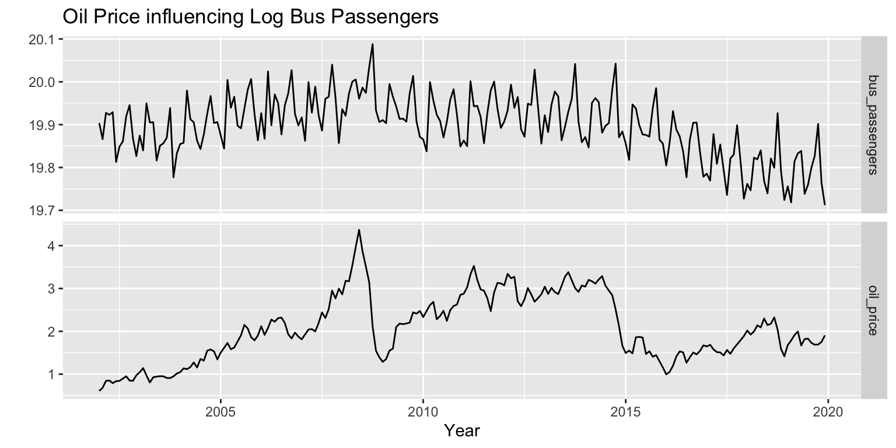
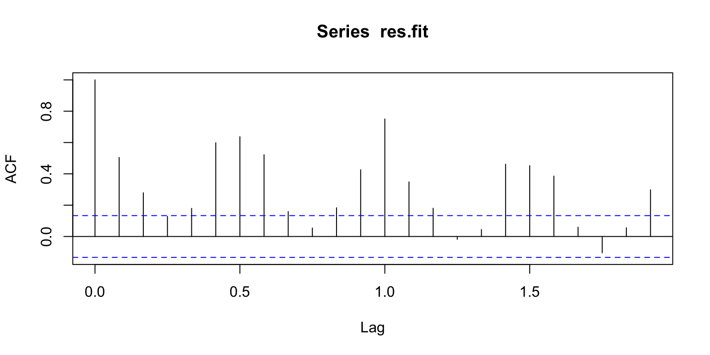
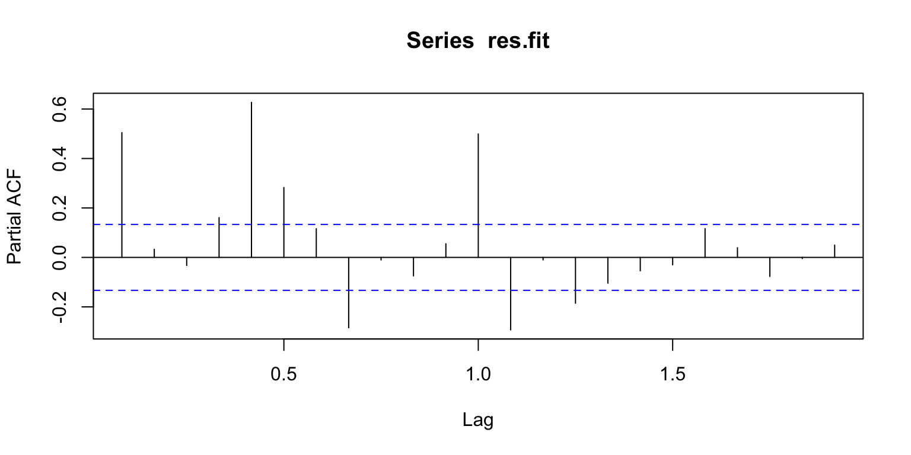
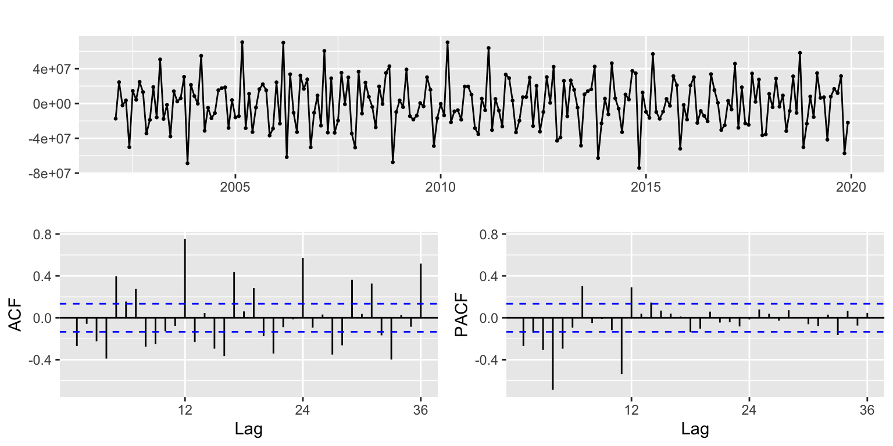
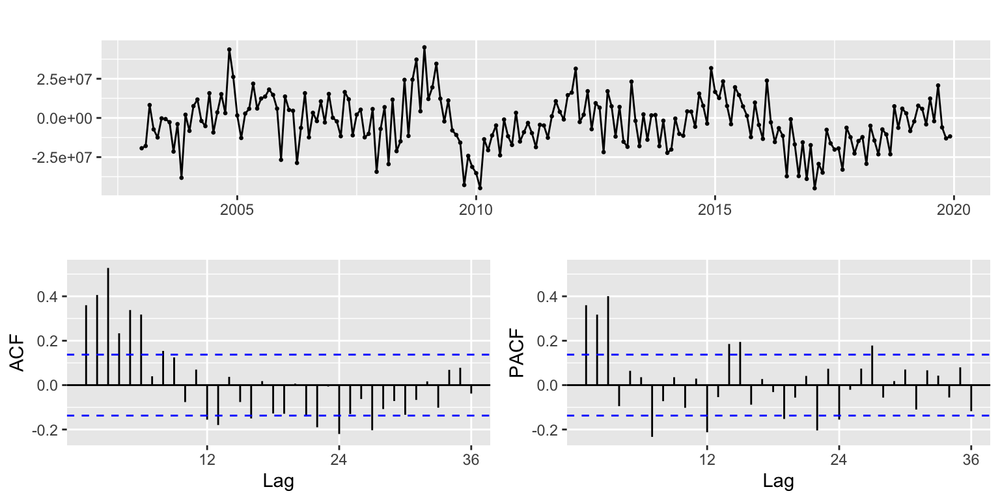
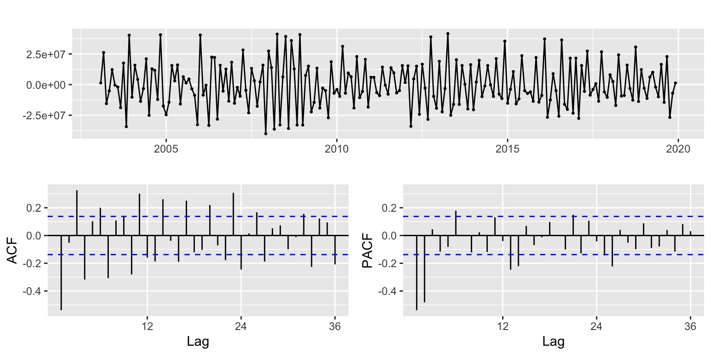
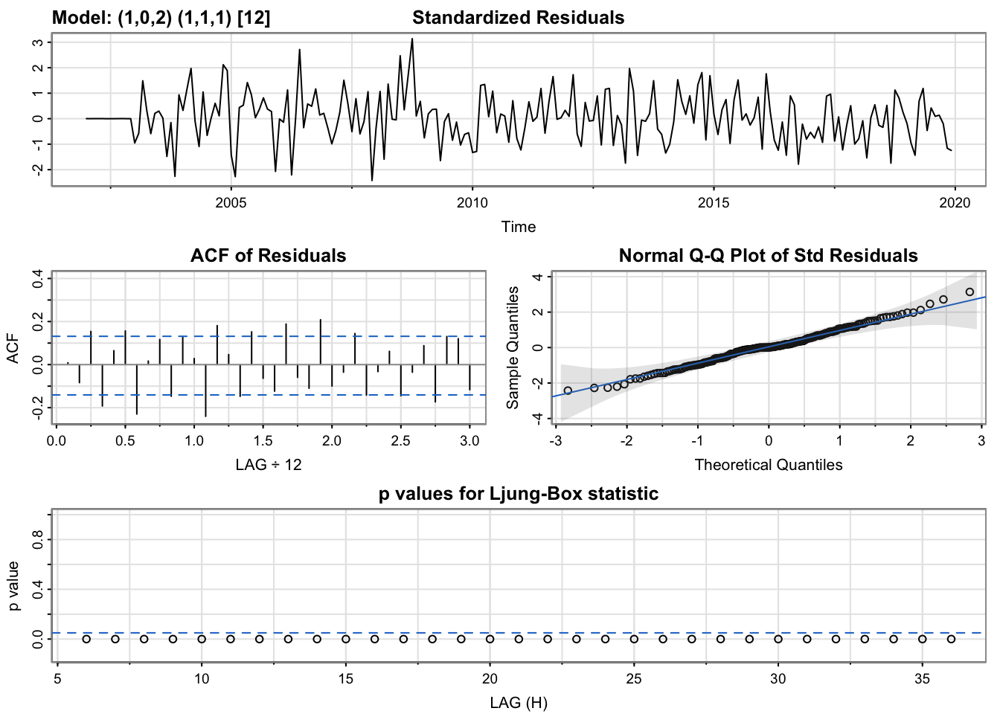
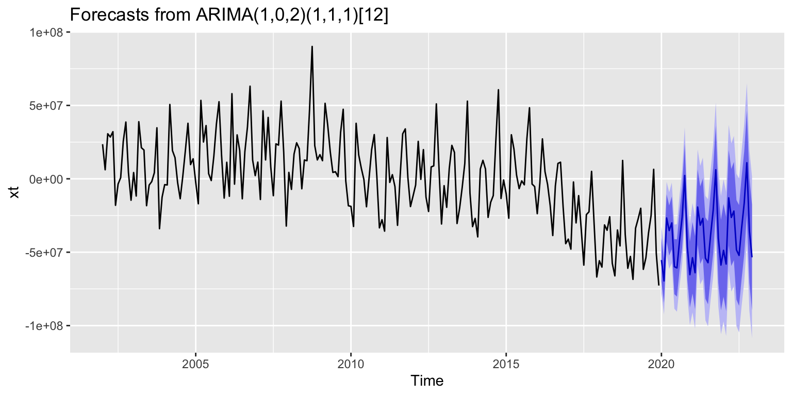

SARIMAX - Bus Passengers ~ Oil Price - Pre Covid Analysis
Dataset
As it was analyzed in the previous section, we obtained the Pre COVID Bus Passenger SARIMA model. Below are the steps followed to obtain a SARIMAX model for the bus passenger variable with oil price as an exogeonous variable.
The individual datasets have a different timestamp, therefore the starting year is 2002 until 2019 included, to obtain a pre COVID analysis.
{r}
# Import dataset
df_bus_passengers_PC <- read_csv('../data/df_bus_passengers_PC.csv')
# Import dataset
df_oil_price_monthly_PC <- read_csv('../data/df_oil_price_monthly_PC.csv')
# Create Date
df_oil_price_monthly_PC <- df_oil_price_monthly_PC %>%
mutate(date2 = make_date(year(date), month(date), 01))
# Check maximum starting date between datasets
if(min(df_bus_passengers_PC$DATE) >= min(df_oil_price_monthly_PC$date))
{
min_date <- min(df_bus_passengers_PC$DATE)
}else
{
min_date <-min(df_oil_price_monthly_PC$date)
}
# Keep relevant columns
df_oil_price_monthly_PC <- df_oil_price_monthly_PC %>% select('date2', 'adjusted')
# Rename columns
names(df_bus_passengers_PC) <- c('DATE', 'bus_passengers')
# Rename columns
names(df_oil_price_monthly_PC) <- c('DATE', 'oil_price')
# Filter starting date
df_bus_passengers_PC <- df_bus_passengers_PC %>% filter(DATE >= min_date)
# Filter starting date
df_oil_price_monthly_PC <- df_oil_price_monthly_PC %>% filter(DATE >= min_date)
# Combine datasets
dd <- merge(df_bus_passengers_PC, df_oil_price_monthly_PC, by.x = "DATE", by.y = "DATE", all = TRUE)
# Order by Date sort ascending
dd <- dd %>% arrange(DATE)
# Create the time series object
dd.ts <- ts(dd,star=decimal_date(min_date),frequency = 12)
# Show table
knitr::kable(head(dd))| DATE | bus_passengers | oil_price |
|---|---|---|
| 2002-01-01 | 440684795 | 0.6078003 |
| 2002-02-01 | 424375541 | 0.6817473 |
| 2002-03-01 | 451262016 | 0.8421044 |
| 2002-04-01 | 449206147 | 0.8514821 |
| 2002-05-01 | 451919744 | 0.7909517 |
| 2002-06-01 | 402466426 | 0.8366095 |
Plot
The first step is to plot the time series fot both variables. In the second visualization, the bus passenger variable has been transformed with a log transformation. We can observe that the data is not being clearer so we decided to keep the original data.
{r}
# Plot time series for both variables.
autoplot(dd.ts[,c(2:3)], facets=TRUE) +
xlab("Date") + ylab("") +
ggtitle("Oil Price influencing Bus Passengers")
Log Plot
{r}
lg.dd <- dd #making a copy
lg.dd$bus_passengers<-log(dd$bus_passengers)
lg.dd.ts<-ts(lg.dd,star=decimal_date(min_date),frequency = 12)
autoplot(lg.dd.ts[,c(2:3)], facets=TRUE) +
xlab("Year") + ylab("") +
ggtitle("Oil Price influencing Log Bus Passengers")
Linear Model
The next step is to fit the linear model where we consider both variables that are being analized. The ACF and PACF plot for the residuals time series for the linear model is useful to observe high autocorrelation for most of the lags.
{r}
# Create ts for Bus Passengers
dd$bus_passengers <- ts(dd$bus_passengers, star=decimal_date(min_date),frequency = 12)
# Create ts for Oil Price
dd$oil_price <- ts(dd$oil_price, star=decimal_date(min_date),frequency = 12)
# Fit the linear model
fit.reg <- lm(bus_passengers ~ oil_price, data=dd)
summary(fit.reg)
Call:
lm(formula = bus_passengers ~ oil_price, data = dd)
Residuals:
Min 1Q Median 3Q Max
-72708753 -18798685 801515 19261215 90164309
Coefficients:
Estimate Std. Error t value Pr(>|t|)
(Intercept) 408022142 5624539 72.543 <2e-16 ***
oil_price 14922556 2558649 5.832 2e-08 ***
---
Signif. codes: 0 '***' 0.001 '**' 0.01 '*' 0.05 '.' 0.1 ' ' 1
Residual standard error: 29090000 on 214 degrees of freedom
Multiple R-squared: 0.1371, Adjusted R-squared: 0.1331
F-statistic: 34.01 on 1 and 214 DF, p-value: 2e-08ACF Plot
{r}
res.fit <- ts(residuals(fit.reg),star=decimal_date(min_date),frequency = 12)
# ACF Plot
acf(res.fit)
PACF Plot
{r}
# PACF Plot
pacf(res.fit)
Differencing
In the first plot display we observe the first ordinary difference over the residuals of the fit. The ACF plot shows that there is high autocorrelation for 12 and 24 lags. Therefore, we decide to apply the first seasonal difference to the residuals of the fit. The ACF plot shows that there is high autocorrelation at the first lags, but it quickly tends to be stationary as the lag values are contained within the confidence bands. Finally, we applied both the ordinary and seasonal first differences, but by looking at the ACF plot, we can see that there is high autocorrelation at several lags. Therefore, don’t use both differencing approaches.
{r}
# Ordinary Differencing
res.fit %>% diff() %>% ggtsdisplay()
First Seasonal Difference
# Ordinary and Seasonal Differencing
res.fit %>% diff(12) %>% ggtsdisplay()
First Ordinary and Seasonal Difference
# Ordinary and Seasonal Differencing
res.fit %>% diff() %>% diff(12) %>% ggtsdisplay()
Model Parameters
Based on the ACF and PACF plot for the first seasonal difference on residuals, we define:
\(p = 3\) - \(P = 2\)
\(d = 0\) - \(D = 1\)
\(q = 0\) - \(Q = 2\)
{r}
xt <- res.fit
s <- 12
#write a funtion
SARIMA.c = function(p1,p2,q1,q2,P1,P2,Q1,Q2,data){
temp <- c()
d <- 0
D <- 1
s <- 12
n <- 40
i <- 1
temp <- data.frame()
ls <- matrix(rep(NA,9*n),nrow=n)
for (p in p1:p2)
{
for(q in q1:q2)
{
for(P in P1:P2)
{
for(Q in Q1:Q2)
{
if(p+d+q+P+D+Q<=12)
{
model<- Arima(data,order=c(p-1,d,q-1),seasonal = c(P-1,D,Q-1))
ls[i,] <- c(p-1,d,q-1,P-1,D,Q-1,model$aic,model$bic, model$aicc)
i <- i+1
#print(i)
}
}
}
}
}
temp <- as.data.frame(ls)
names(temp) <- c("p","d","q","P","D","Q","AIC","BIC","AICc")
temp <- na.omit(temp)
temp
#knitr::kable(temp)
}
temp <- SARIMA.c(p1=1,p2=3,q1=1,q2=3,P1=1,P2=2,Q1=1,Q2=2,data = xt)
knitr::kable(temp)| p | d | q | P | D | Q | AIC | BIC | AICc |
|---|---|---|---|---|---|---|---|---|
| 0 | 0 | 0 | 0 | 1 | 0 | 7369.881 | 7373.199 | 7369.900 |
| 0 | 0 | 0 | 0 | 1 | 1 | 7367.156 | 7373.793 | 7367.216 |
| 0 | 0 | 0 | 1 | 1 | 0 | 7368.978 | 7375.614 | 7369.037 |
| 0 | 0 | 0 | 1 | 1 | 1 | 7364.466 | 7374.420 | 7364.586 |
| 0 | 0 | 1 | 0 | 1 | 0 | 7350.861 | 7357.497 | 7350.921 |
| 0 | 0 | 1 | 0 | 1 | 1 | 7345.849 | 7355.803 | 7345.969 |
| 0 | 0 | 1 | 1 | 1 | 0 | 7349.326 | 7359.281 | 7349.446 |
| 0 | 0 | 1 | 1 | 1 | 1 | 7338.160 | 7351.432 | 7338.361 |
| 0 | 0 | 2 | 0 | 1 | 0 | 7337.662 | 7347.616 | 7337.782 |
| 0 | 0 | 2 | 0 | 1 | 1 | 7328.027 | 7341.300 | 7328.228 |
| 0 | 0 | 2 | 1 | 1 | 0 | 7333.542 | 7346.814 | 7333.743 |
| 0 | 0 | 2 | 1 | 1 | 1 | 7320.894 | 7337.485 | 7321.197 |
| 1 | 0 | 0 | 0 | 1 | 0 | 7339.665 | 7346.301 | 7339.725 |
| 1 | 0 | 0 | 0 | 1 | 1 | 7330.838 | 7340.793 | 7330.958 |
| 1 | 0 | 0 | 1 | 1 | 0 | 7337.465 | 7347.419 | 7337.585 |
| 1 | 0 | 0 | 1 | 1 | 1 | 7316.007 | 7329.280 | 7316.208 |
| 1 | 0 | 1 | 0 | 1 | 0 | 7306.634 | 7316.588 | 7306.754 |
| 1 | 0 | 1 | 0 | 1 | 1 | 7257.735 | 7271.007 | 7257.936 |
| 1 | 0 | 1 | 1 | 1 | 0 | 7297.568 | 7310.841 | 7297.769 |
| 1 | 0 | 1 | 1 | 1 | 1 | 7249.039 | 7265.629 | 7249.342 |
| 1 | 0 | 2 | 0 | 1 | 0 | 7295.581 | 7308.853 | 7295.782 |
| 1 | 0 | 2 | 0 | 1 | 1 | 7246.489 | 7263.079 | 7246.792 |
| 1 | 0 | 2 | 1 | 1 | 0 | 7281.790 | 7298.380 | 7282.093 |
| 1 | 0 | 2 | 1 | 1 | 1 | 7240.026 | 7259.934 | 7240.452 |
| 2 | 0 | 0 | 0 | 1 | 0 | 7318.217 | 7328.171 | 7318.337 |
| 2 | 0 | 0 | 0 | 1 | 1 | 7289.109 | 7302.381 | 7289.310 |
| 2 | 0 | 0 | 1 | 1 | 0 | 7313.182 | 7326.455 | 7313.383 |
| 2 | 0 | 0 | 1 | 1 | 1 | 7276.028 | 7292.619 | 7276.331 |
| 2 | 0 | 1 | 0 | 1 | 0 | 7301.527 | 7314.800 | 7301.728 |
| 2 | 0 | 1 | 0 | 1 | 1 | 7251.212 | 7267.802 | 7251.515 |
| 2 | 0 | 1 | 1 | 1 | 0 | 7290.058 | 7306.648 | 7290.361 |
| 2 | 0 | 1 | 1 | 1 | 1 | 7243.912 | 7263.821 | 7244.338 |
| 2 | 0 | 2 | 0 | 1 | 0 | 7290.051 | 7306.642 | 7290.354 |
| 2 | 0 | 2 | 0 | 1 | 1 | 7248.463 | 7268.372 | 7248.890 |
| 2 | 0 | 2 | 1 | 1 | 0 | 7282.730 | 7302.638 | 7283.156 |
| 2 | 0 | 2 | 1 | 1 | 1 | 7241.908 | 7265.135 | 7242.480 |
Model Selection
Based on all the combinations, we observe that model 24 has the lowest AIC, BIC and AICc, with:
\(p = 1\) - \(P = 1\)
\(d = 0\) - \(D = 1\)
\(q = 2\) - \(Q = 1\)
{r}
# Check best model with AIC
temp[which.min(temp$AIC),] p d q P D Q AIC BIC AICc
24 1 0 2 1 1 1 7240.026 7259.934 7240.452{r}
# Check best model with BIC
temp[which.min(temp$BIC),] p d q P D Q AIC BIC AICc
24 1 0 2 1 1 1 7240.026 7259.934 7240.452{r}
# Check best model with AICc
temp[which.min(temp$AICc),] p d q P D Q AIC BIC AICc
24 1 0 2 1 1 1 7240.026 7259.934 7240.452Model Summary
{r}
AIC <- temp[which.min(temp$AIC),]
p1 <- AIC$p
d1 <- AIC$d
q1 <- AIC$q
P1 <- AIC$P
D1 <- AIC$D
Q1 <- AIC$Q
fit <- Arima(xt, order=c(p1, d1, q1), seasonal=c(P1, D1, Q1))
summary(fit)Series: xt
ARIMA(1,0,2)(1,1,1)[12]
Coefficients:
ar1 ma1 ma2 sar1 sma1
0.9790 -0.8660 0.2807 0.2446 -0.9400
s.e. 0.0282 0.0696 0.0767 0.0842 0.1083
sigma^2 = 1.334e+14: log likelihood = -3614.01
AIC=7240.03 AICc=7240.45 BIC=7259.93
Training set error measures:
ME RMSE MAE MPE MAPE MASE
Training set -892685.9 11088051 8428585 -0.07640613 124.2668 0.6331264
ACF1
Training set -0.001287048auto.arima()
Using the function auto.arima() we obtain the following parameters:
\(p = 1\) - \(P = 0\)
\(d = 0\) - \(D = 1\)
\(q = 0\) - \(Q = 2\)
We can observe that these parameters are different than the ones obtained by performing the parameter selection, therefore we use cross-validation to determine which model is performing better.
{r}
# Assign the exogenous variable
xreg <- dd.ts[, "oil_price"]
fit_auto_arima <- auto.arima(dd.ts[, "bus_passengers"], xreg = xreg)
p2 <- 1
d2 <- 0
q2 <- 0
P2 <- 0
D2 <- 1
Q2 <- 2
summary(fit_auto_arima)Series: dd.ts[, "bus_passengers"]
Regression with ARIMA(1,0,0)(0,1,2)[12] errors
Coefficients:
ar1 sma1 sma2 xreg
0.5536 -0.3129 -0.3573 7405046
s.e. 0.0970 0.1011 0.0797 2668898
sigma^2 = 1.949e+14: log likelihood = -3647.03
AIC=7304.06 AICc=7304.36 BIC=7320.65
Training set error measures:
ME RMSE MAE MPE MAPE MASE
Training set -2113747 13433027 10654542 -0.5820241 2.450645 0.8270612
ACF1
Training set -0.2587463Cross Validation
Choose best model with CV
{r}
x <- xt
k <- 12
n <- length(x)
rmse1 <- matrix(NA,n-k,12)
rmse2 <- matrix(NA,n-k,12)
st <- tsp(x)[1]+(k-2)/12
# for(i in 1:(n-k))
# {
# xtrain <- window(x, end = st + i/12)
# xtest <- window(x, start = st + (i+1)/12, end = st + (i+12)/12)
# # Model 1: ARIMA(1,0,2)(1,1,1)[12]
# # Model 2: ARIMA(1,0,0)(0,1,2)[12]
# fit <- Arima(xtrain, order=c(p1,d1,q1), seasonal=list(order=c(P1,D1,Q1), period=12),
# include.drift=FALSE, method="ML")
# fcast <- forecast(fit, h=12)
# fit2 <- Arima(xtrain, order=c(p2,d2,q2), seasonal=list(order=c(P2,D2,Q2), period=12),
# include.drift=FALSE, method="ML")
# fcast2 <- forecast(fit2, h=12)
# rmse1[i,1:length(xtest)] <- sqrt((fcast$mean-xtest)^2)
# rmse2[i,1:length(xtest)] <- sqrt((fcast2$mean-xtest)^2)
# }
# plot(1:4, colMeans(rmse1,na.rm=TRUE), type="l", col=2, xlab="horizon", ylab="RMSE")
# lines(1:4, colMeans(rmse2,na.rm=TRUE), type="l",col=3)
# legend("topleft",legend=c("fit1: Best Model","fit2: auto.arima model"),col=2:3,lty=1)
# p <- best_model$p
# d <- best_model$d
# q <- best_model$q
# P <- best_model$P
# D <- best_model$D
# Q <- best_model$Q
# model <- Arima(xt, order=c(p, d, q), seasonal=c(P,D,Q))Model Diagnostics
After using cross validation, we can confirm that the best model is the first one: ARIMA(1,0,2)(1,1,1)[12]. In addition, the performance metric values, AIC, BIC and AICc, have lower values compared to the auto.arima(). Therefore, we procede to plot the model diagnostics.
Here we can observe that the residuals plot looks like white noise. The standard residuals are approximately normal as they lie on the normal curve in the Q-Q plot. The ACF plot for residuals shows almost no autocorrelation left and the p values for Ljung-Box are close to the significance band.
{r}
best_model <- temp[which.min(temp$AIC),]
p <- best_model$p
d <- best_model$d
q <- best_model$q
P <- best_model$P
D <- best_model$D
Q <- best_model$Q
model_output <- capture.output(sarima(xt, p1, d1, q1, P1, D1, Q1, s))
{r}
model <- Arima(dd.ts[, "bus_passengers"], order=c(p, d, q), seasonal=c(P,D,Q) , xreg = xreg)Model Equation with Latex
\[\begin{align} x_t &= 0.9790 x_{t-1} - 0.8660 w_{t-1} + 0.2807 w_{t-2} + 0.2446 x_{t-12} - 0.9400 w_{t-12} + w_t \end{align}\]
Forecast Plot
{r}
forecast_fit <- forecast(fit,36)
# Path to save plot
file_path <- "../images/7_SARIMAX_bus.png"
# Plot
plot <- autoplot(forecast_fit)
# Use ggsave to save the plot as a PNG image
ggsave(plot, filename = file_path, width = 10, height = 5)
# Show plot
plot